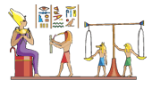

|
Extra! Extra! End of civilization news site. Two sunny civilizations for the price of one! The cultures of Sumer and Egypt live on through the pages of The Sumer-Egypt Sun, despite both areas being invaded by Assyrians, Persians, and Alexander the Great. In forthcoming features we shall bring you details of the sun's important role in preserving the great writings of Sumer, the world's first civilization. We shall tell you of the sun-drenched land of Egypt and its wondrous monuments to the great pharaohs who ruled in bygone days. But first.......  |